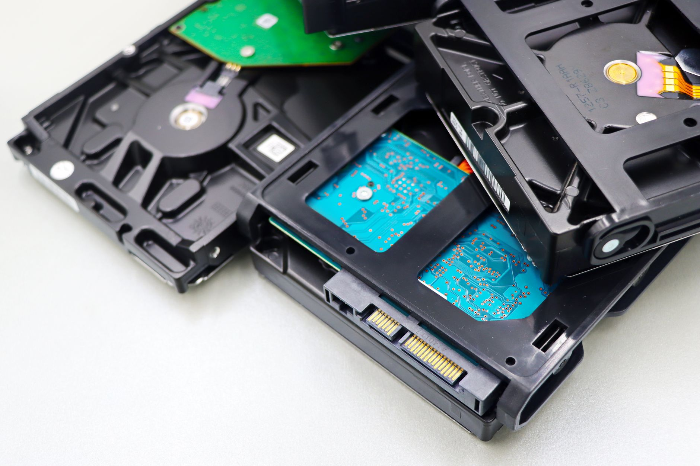

미중 반도체 합의 불발 장기화, 엔비디아 공백이 韓 HBM 수요 구조 바꾼다

2025년 5월 미중 정상회담에서 반도체 수출 통제 관련 합의는 도출되지 않았다. 엔비디아의 H20 칩은 미국의 추가 규제로 중국 판매가 사실상 중단된 상태이며, 엔비디아는 H20 판매 차질로 2025년 1분기에만 약 55억 달러(약 7.4조 원) 규모의 손실을 예고했다.
딥시크(DeepSeek)가 자체 AI 추론 칩 개발에 착수한 것으로 확인됐으며, 화웨이 어센드(Ascend) 910C는 성능 면에서 H100의 60~70% 수준에 도달한 것으로 평가된다. 중국이 자체 AI 칩 생태계를 구축할수록 HBM을 포함한 고성능 메모리의 중국향 수요 비중은 줄어들 수밖에 없다.
반면 미국 데이터센터 AI 투자는 2025년에만 마이크로소프트 800억 달러, 아마존 1,000억 달러, 구글 750억 달러 규모의 설비 투자 계획이 발표됐다. 이 투자의 핵심 부품인 HBM3e·HBM4는 현재 SK하이닉스가 엔비디아에 독점 공급 중이며, 삼성전자도 HBM4 퀄리피케이션을 진행 중이다.
미중 기술 디커플링이 장기화될수록 한국 메모리 업계의 고객 포트폴리오는 미국 하이퍼스케일러 중심으로 집중된다. 이는 단가 협상력 약화라는 리스크와, 안정적 대량 수주라는 기회를 동시에 의미한다.
한국 반도체 업계에 '미중 합의 불발'이 단기적으로 안도감을 주는 것은 사실이다. 합의가 이뤄졌다면 엔비디아가 중국에 H20을 다시 팔 수 있게 되고, 그 과정에서 중국향 HBM 수요가 생길 수 있었으나, 동시에 중국 AI 인프라 고도화를 가속시킬 리스크도 있었다. 교착 상태는 한국이 미국 데이터센터 수요에 안정적으로 집중할 수 있는 구조를 유지해준다.
그러나 중장기적으로 중국이 자체 AI 칩을 완성하면 HBM 수요의 중국향 비중 자체가 영구적으로 줄어든다. SK하이닉스·삼성전자 모두 중국향 HBM 매출 기여도가 현재 10% 미만으로 알려져 있지만, 미래 성장 시장에서의 배제는 장기 성장 시나리오에 영향을 준다.
SK하이닉스: 엔비디아 HBM3e 독점 공급 지위 유지로 미국 데이터센터 수요의 직접 수혜. 2025년 HBM 매출이 전체 D램 매출의 40% 이상을 차지할 것으로 전망된다.
미국 AI 인프라 소재 공급사: 데이터센터 급증으로 서버 기판용 동박·절연재·냉각 소재 수요가 동반 증가. 국내에서는 SKC의 동박 자회사, 이녹스첨단소재 등이 반사 수혜를 입을 수 있다.
삼성전자: HBM4 퀄리피케이션 지연이 계속될 경우, 엔비디아 공급망 진입 기회가 줄고 미국 데이터센터 수요 증가분을 SK하이닉스에 빼앗기는 구조가 고착된다.
중국 AI 스타트업: 엔비디아 H20 차단과 자체 칩 성능 미달 사이의 간극에서 연산 자원 부족 문제가 지속된다. 딥시크가 자체 칩을 완성하더라도 양산 체계 구축까지 최소 2~3년이 필요하다.
한국 HBM 투자자와 소재 공급사는 '중국 변수'를 분리해서 봐야 한다. 중국향 HBM 수요 회복 기대보다는 미국 데이터센터 투자 집행 일정을 트래킹하는 것이 훨씬 정확한 수요 예측 지표다. 마이크로소프트·아마존·구글의 분기별 설비투자 가이던스가 HBM 발주의 선행 지표다.
소재 공급사 관점에서 데이터센터 급증은 HBM 기판·언더필재·열계면소재(TIM) 수요를 동반 견인한다. 이 소재들의 국내 공급사가 엔비디아·TSMC 밸류체인에 편입됐는지를 확인하는 것이 투자 판단의 기준이 되어야 한다.
실제 조달 현장에서는 — 미국 데이터센터 가속기 패키지에 들어가는 열계면소재(TIM) 수요가 HBM 발주보다 3~6개월 선행해 움직인다. 갈륨 합금 기반 TIM 소재를 납품하는 국내외 업체들의 발주 증가가 감지되면 HBM 수요 피크의 선행 신호로 볼 수 있다.
이 포스팅은 쿠팡 파트너스 활동의 일환으로 수수료를 제공받습니다.